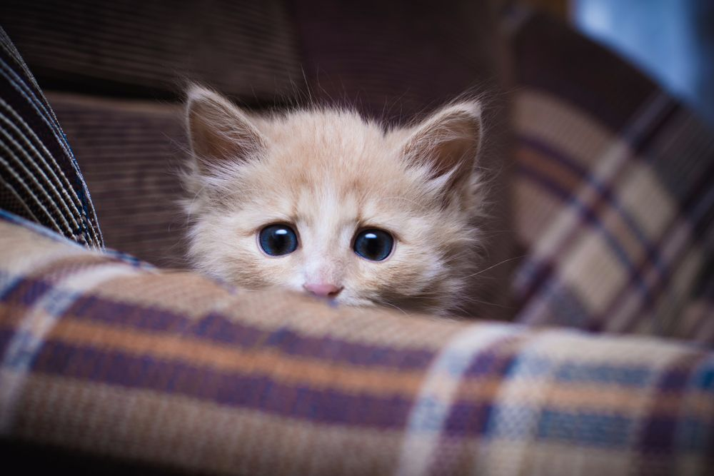
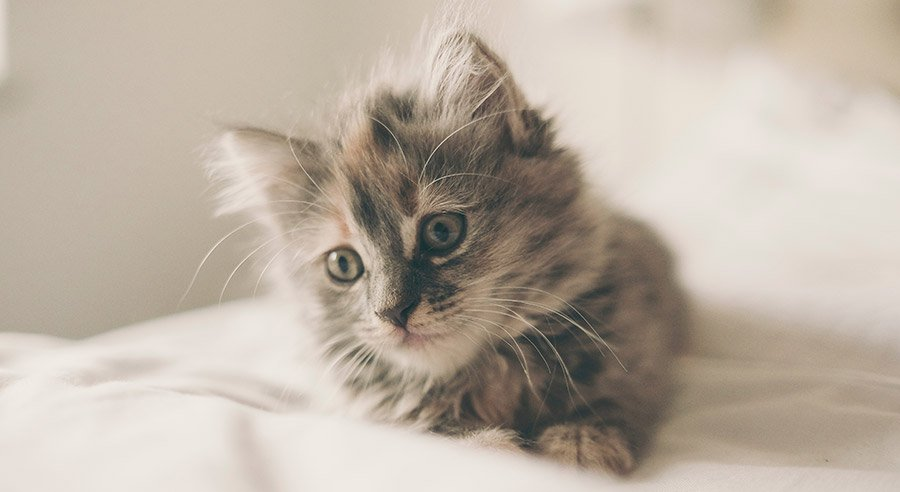
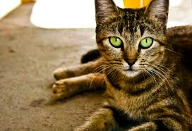

El Gato, el "Michi", "Michifu" o como deseen llamarlo

El gato es un animal de conducta felina: astuto, cazador, elegante y con un encanto muchas veces poco conocido. La raza o procedencia apenas influyen en su carácter. Siempre será independiente y poseerá un alto grado de curiosidad. Por ello, elegir un gato como mascota no se reduce a decidir la raza, es conveniente reconocer su comportamiento a nivel individual. De esta forma, podremos tener claras nuestras obligaciones y sabremos qué va a suponer el compartir nuestro hogar con él.
Hoy en día figura como uno de los mejores animales de compañía, sobre todo en la ciudad. Cómodos de tener, requieren únicamente el espacio de cualquier hogar. Son animales limpios y se adaptan a su dueño, ya se trate de una persona joven y solitaria, de un anciano que pasa muchas horas en casa, o de niños, siempre que se muestren cariñosos con ellos.
¿Cual es mi objetivo al crear esta pagina?
Mi objetivo no es otro mas que el de dar a conocer a estas maravillosas mascotas pero desde otra perspectiva. Si bien hoy en dia es imposible no reconocer a un gato, a la hora de criar a uno todo es diferente. Criar a un gato es todo un desafio puesto que estos a diferencia de los perros u otras mascotas, son animales 100% territoriales y rutinarios por lo que nosotros no estariamos adoptando a un gato, el nos adopta a nosotros.
Remontando a la preguntar original: Mi objetivo no es otro mas que el de concientizar sobre estos maravillosos animales, para que el dia de mañana cuando te decidas en tener uno(O por si ya lo tienes) puedas tener al alcance toda la informacion necesaria, garantizando asi una salud 100% estable.
A nivel general, todos los gatos son seres que merecen un cuidado excepcional, debido a su curiosidad y su temperamento, son propensos a accidentes(peleas contra todo ser viviente, curiosidad, caídas etc)
Pero eso no quita que a medida que nuestro felino va creciendo, este va a ir necesitando ciertos cuidados específicos, por ende:

Saber cómo cuidar un gato es relativamente fácil si hemos disfrutado de la compañía de un felino con anterioridad. Pero si es la primera vez que tienes a un gato a tu cargo, es importante que conozcas algunas cosas que necesita para ser feliz
En este artículo de detallaremos contigo todo lo que necesitas saber para cuidar de la mejor forma a tu nuevo gato, repasando detalles como es la alimentación, la educación, los juguetes o dónde va a hacer sus necesidades.
¿Conoces a alguien que haya encontrado un gato bebé o tu tienes uno en casa? Los primeros días de vida de los gatitos son los más complicados y hay que tener mucho cuidado con ellos porque son muy delicados. Durante estas semanas es conveniente que esté con su madre el mayor tiempo posible y ella se encargará de alimentarlo y limpiarlo. Si no fuera posible que el gatito estuviera con su madre, deberemos ir al veterinario para comprar una leche de gato que se adapte a las condiciones de nuestro minino. La leche de vaca es demasiado fuerte para los gatos bebés, no contiene los nutrientes necesarios y además puede provocarles diarreas. Habrá que alimentarle en biberón hasta que se valga por sí mismo. Hay algo muy importante que no puedes pasar por alto: la temperatura corporal de tu pequeño gato. Los cachorros necesitan una fuente de calor porque durante las primeras semanas no son capaces de regular la temperatura de su cuerpo. Si el gatito se enfría puede morir por lo que es recomendable ponerle bolsas de agua envueltas en toallas, situarle cerca de la calefacción y, si fuera posible, juntarle con sus hermanos para que entre ellos se arropen. Todo esto hay que hacerlo incluso durante verano.
Cuando son pequeños debemos enseñarles a usar su arenero para que hagan sus necesidades. Si aún no tienen la capacidad para desplazarse solos hasta él tendrás que estimularles para que defequen como haría su madre. Una vez que consigan defecar, trasladaremos los excrementos a la caja de arena para que comiencen a asociar ideas.
Al igual que en algunas personas, el miedo que los gatos adultos tienen a ciertas situaciones o sufren en algunos momentos puntuales puede tener relación con recuerdos que arrastran desde pequeños. Respeta y estimula las necesidades de juego del gatito y nunca le castigues a no ser que haga algo malo porque podría llegar a sufrir mucho. Deberás ir educándole para que juegue sin ser agresivo. Podemos utilizar juguetes específicos para gatos cachorros para entretenerle. Y si todo esto te sabe a poco, a continuación te dejamos algunos consejos sobre los cuidados básicos de los gatitos.
Gatos cachorros
Gatos sin destetar

Si el gatito sigue aún en proceso de lactancia, le dejaremos con su mamá. Si eso no fuera posible le alimentaremos con la leche de gato recomendada por el veterinario y con un biberón con tetina especial.
1.Mantén la temperatura corporal:
Cuando los gatitos nacen pasan todo el día al lado del vientre de la madre. Además de alimentarse, esta cercanía les permite mantenerse calientes. Por ello, deberás ofrecerle todo lo que necesite para que su temperatura no disminuya, sobre todo en las noches, ya que aún no es capaz de regular el calor corporal.
Puedes envolverle en una manta o usar una almohada térmica. Incluso si tienes otras mascotas puedes ‘usarlas’ como niñeras para que le den calor (y también afecto). De lo contrario, si el gatito sigue llorando o temblando y tiene las almohadillas frías, envuélvelo en tu regazo.
2. No le des leche ‘común’:
Un error muy habitual cuando encontramos un gatito bebé es calentar leche de la nevera y dársela. Wste líquido no es bueno para su salud, debido a que no cuenta con los nutrientes necesarios e incluso puede causarle problemas estomacales como diarrea o vómitos.
En las tiendas para mascotas venden una leche de fórmula en polvo, que sustituye a la de la madre. Si no la consigues, dale agua tibia con una jeringuilla. Luego deberás darle la leche con un biberón y que el líquido esté a 37°C. ¡Recuerda que debe alimentarse cada tres horas!
3. Enséñale a hacer sus necesidades:
Cuando los gatitos se destetan empiezan a beber agua. Seguirán siendo frágiles así que nos esforzaremos en mantener el agua limpia y fresca para que no se pongan enfermos.
Entre las principales tareas a cumplir para cuidar a un gato bebé huérfano es enseñarle a que haga sus necesidades. La madre se encargaría de estimularlos lamiendo el vientre y alrededores. En tu caso, basta con mojar un algodón con agua tibia y pasarle por los genitales y ano.
4.Siempre con agua fresca:
Cuando los gatitos se destetan empiezan a beber agua. Seguirán siendo frágiles así que nos esforzaremos en mantener el agua limpia y fresca para que no se pongan enfermos
5.Comprueba siempre sus excreciones;
Comprueba siempre las excreciones
Cuando los gatos son muy pequeños, una forma de saber su estado de salud es observando sus excrementos. Revisa que no esten más blandos de lo normal o que contengan parásitos
Gatos destetados

1. Dale comida especial
En las tiendas para mascotas venden pienso para gatos bebé, los cuales son más tiernos que los de adultos y contienen otro tipo de nutrientes o ingredientes. También tienen un tamaño adecuado para su pequeña boca.
Ármate de paciencia y dale poco a poco la comida. Al principio no sabrán que se come o que deben masticarla. Quizás tengas que darle de uno en uno y en la boca. Luego se acostumbrará solo.
2. Llévalo al veterinario
No importa si lo has adoptado de un refugio, si es hijo de la gata de alguien conocido o si lo has encontrado en la calle… Todos los gatos necesitan una visita al veterinario cuando son bebés.
3. Evita los peligros hogareños
Si nunca habías tenido mascota, y mucho menos un gato, quizás tu hogar no sea apto para un animal. No te preocupes porque puedes mejorarlo con solo algunos cambios.
Para empezar, nada de ventanas abiertas ni de acceso libre a terrazas o balcones. Hasta que el gato no se acostumbre a andar solo por todos lados monitorea qué zonas visita.
Otra cuestión muy importante es ocultar cables eléctricos, objetos pequeños (como bolígrafos), medicamentos o artículos de limpieza. Los gatos son muy hábiles y pueden abrir puertas o cajones, así que no te fíes.
Cierra la tapa del cubo de la basura y la del inodoro. No dejes la puerta abierta de la habitación o del baño –o del ambiente al que no quieras que ingrese– y presta atención a las plantas: algunas de ellas pueden ser tóxicas para los gatunos. En resumen:
- Asegúrate de tener todos los medicamentos guardados a buen recaudo.
- Asegura los cables eléctricos. Cualquier cosa es susceptible convertirse en un juguete, incluso los cables. Para evitar que el gatito los muerda, procura esconderlos o utiliza bridas o protectores para mantenerlos sujetos. No estaría de más utilizar protectores para los enchufes.
- Revisa cada rincón de la casa para asegurarte de que no haya un recoveco en el que se pueda quedar atascado. Revisa especialmente las ventanas y las puertas, cerciórate de que el gatito no se puede caer.
- Lo mejor sería que el cubo de la basura y el inodoro tuviesen siempre la tapa cerrada, para que el gatito no pueda caerse dentro.
Un gato de previamente destetado echará mucho de menos a su madre, así que tardará un poco en adaptarse a su nuevo hogar. Ten paciencia y actúa con delicadeza. Se mostrará asustadizo y tímido al principio, pero poco a poco irá ganando confianza. Puedes intentar ganarte su confianza:
- Ofrécele trocitos de comida sabrosa.
- Llámalo con un tono de voz agudo y dulce.
- Utiliza algún juguete para animarlo.
Si continúa escondido, no lo fuerces; recuerda que esconderse le ayuda a manejar mejor el estrés. Respeta su espacio los primeros días. Deja que inspeccione todos los rincones de la casa. Ten en cuenta que un gato puede tardar entre 1 y 4 meses en adaptarse a su nuevo hogar.
Gatos Jovenes/Etapa "Junior"

A partir de los seis meses el gato empieza su etapa de “adolescente”.
Los gatos son seres independientes y muy rutinarios y esto se empieza a denotar en esta etapa;
Los gatos a esta edad es cuando mas saltan a relucir y reforzar su caracter, por ende: Todo depende de la crianza que nosotros le dimos al ser cachorros.
Si bien la crianza es fundamental, tenemos que comprender que a medida que nuestro gato va creciendo su curiosidad y ganas de explorar son mas grandes, por lo que suele ser habitual el que tengan instintos de "escapar" de casa, de ignorarnos o de tomar un juego "bruto"; en definitiva se convierten en "Gatos Rebeldes"
Como se aclaro en un inicio: Partimos de la base de que cada gato es diferente. No hay unas razas de gatos más rebeldes; la rebeldía viene más en el carácter del animal y en cómo lo hemos educado.
Durante la convivencia con un gato, este puede mostrar algunas conductas rebeldes. Las más conocidas y habituales son estas:
- Juego eufórico del gato por la noche
- Robos y saltos sobre muebles o zonas sensibles
- Muerde muebles o ropa
- Arañamiento compulsivo
¿Como evitamos o solucioanmos esto?
Paciencia.
Los gatos son bastante independientes, por lo que corregir conductas en ellos es todo un reto. De ahí que se insista en que cuanto más joven sea el gato, más asequible es el cambio de conducta.
Si adoptamos ya a un gato adulto con carácter, no nos queda más que utilizar la paciencia y variar de técnicas de corrección de conducta animal.
Para aplicar "castigos" o "reprimendas" a nuestras mascotas, debemos de comprender que ellos poseen la posibilidad de "asociar" sus acciones con nuestras reacciones. Por ende:
A la hora de jugar, si el animal se "excede" y nos araña o muerde "fuerte", lo que debemos hacer es: Simplemente dejar de jugar e ignorarlo...¿Por que? Sencillo: A nuestras mascotas les gusta jugar con nosotros, les gusta que le prestemos atencion y demas, si despues de "excederse" nosotros nos vamos este lo asociara con su mal accionar y con el tiempo dejara de hacerlo.
Si nuestra mascota se excede jugando de noche es por una sencilla razon: Tu gato no ah tenido la suficiente "estimulacion" de dia por ende: "esta con todas las pilas" y no encuentra otra solucion que descargarlas a noche, esto puede solucionarse brindandole juegos y actividades de alta intensidad durante el dia, Ubicandolo en una zona que estre provista de juguetes o diferentes formas de entretenerse(Rascadores, zonas para que salte etc.) o simplemente contar con un segundo felino para que sea su compañero de juego.
Si nuestro gato nos araña o muerde la ropa o muebles : Si quieres que el gato aprenda que ese artículo (mueble o ropa) no se puede morder, es útil sustituirlos por plantas gateras cuya ingesta no es perjudicial para el animal u otros sustitutos válidos (existen multitud de juguetes para gatos masticables). Solo en los casos donde el problema es psicológico del animal habría que recurrir a la solución farmacológica.
Nunca, y repetimos, nunca deberemos insuflar un castigo físico a nuestro animal, puede agravar un sencillo problema de conducta y además llevar al animal a tener miedo, a ser violento y/o agravar el problema.
Pero no son todos cambios en su caracter y personalidad, tambien se presentan cambios evidentes como lo son los fisicos y cambios hormonales;
Ha esta edad los gatos alcanzan la madurez sexual y es el momento para pensar en
esterilizarlo.
Hay muchos falsos mitos que demonizan la esterilización, pero lo cierto es que es la única forma eficaz de evitar camadas no deseadas y hace que los animales sean más tranquilos y, por lo general, vivan más: el estrés físico que supone la actividad reproductiva tanto para los machos (lesiones por peleas, por ejemplo) como para las hembras (los embarazos, los partos, amamantar a los cachorros…) determina que los felinos puedan sufrir más problemas de salud, vivan menos y con peor calidad de vida.
- Su mascota hembra vivirá una vida más larga y más sana
- La esterilización ayuda a prevenir las infecciones uterinas y el cáncer de mama, el cual es fatal en alrededor del 50 por ciento de los perros y 90 por ciento de los gatos. Esterilizar a su mascota antes de su primer celo ofrece la mejor protección de estas enfermedades.
- La castración proporciona mayores beneficios de salud para su mascota macho.
- A más de prevenir crías no deseadas, la castración de su compañero animal previene el cáncer a los testículos, si se lo realiza antes de los seis meses de edad.
- La esterilización o castración NO engordará a su mascota.
- La falta de ejercicio y la demasiada comida hará que su mascota aumente libras extras, más no la castración. Su mascota permanecerá en forma y reluciente mientras continúe proporcionándole ejercicio y controlando el consumo de comida.
A nivel general, son muchisimas los beneficios de la esterilización; por lo que es fundamental para la salud de nuestra mascota.
Gatos Adultos +
En esta etapa, nuestro gato ya habra pasado por su rebeldia y tendria una personalidad fuerte y fija, quizas sea la etapa donde podamos observar y contemplar los frutos de nuestro esfuerzo; veremos durmiendo a nuestro felino por un minimo de 16 horas en la cama que nosotros le enseñamos a usar, lo veremos ir a su arenero sin tener absolutamente ningun desliz y podremos jugar con el tal cual nosotros le enseñamos.
Desde que el felino alcanza su plenitud física hasta que llega a la etapa sénior las visitas al veterinario deben ser como mínimo anuales. Las dosis vacunales de recuerdo y las desparasitaciones mantendrán la salud de nuestro amigo peludo al 100 por 100 y si pudiese aparecer algún achaque temprano al final de esta etapa las revisiones periódicas lo detectarán y controlarán a tiempo.
Lo fundamental en este periodo aparte de las revisiones veterinarias, sobre todo si el gato o gata están esterilizados, es controlar muy bien su alimentación para evitar que sufra sobrepeso u obesidad: un gato gordito ni está más sano ni es más feliz. Al contrario, cuando están por encima de su peso pueden sufrir trastornos de todo tipo, desde problemas articulares hasta diabetes. Conforme el animal va cumpliendo años es naturalmente menos activo, así que es importante que sigamos jugando con él y que le proporcionemos una alimentación equilibrada.
Cuando nuestros amigos superan los 7 años, lo que como has visto en la tabla equivale a cuando los humanos comienzan a entrar en la cincuentena, pueden comenzar los achaques. Dependiendo de la vida que hayan llevado durante los años anteriores serán más o menos: en un animal esterilizado, bien alimentado, que se haya mantenido activo, no haya sufrido enfermedades graves y haya recibido, en general, los cuidados oportunos en cada momento esos achaques tardarán más en aparecer.
Por lo tanto, conviene realizar revisiones periódicas en el veterinario a partir de esta edad. El veterinario puede detectar de manera precoz enfermedades frecuentes como la hipertensión o la enfermedad renal crónica.
Conforme nuestro peludo vaya adentrándose en la tercera edad, aproximadamente cuando cumpla los 11 años, se harán más importantes las revisiones preventivas, con visitas al veterinario preferentemente cada seis meses siempre que el especialista no recomiende otra cosa.
¿Has adoptado a un gato adulto?
Criar a un gato adulto es todo un reto, es como criar a uno adolescente pero teniendo en cuenta que este gato ya tiene una base completamente diferente a la que necesitamos o queremos inculcarle.
El gato adulto no va a aprender tan rápido como el gatito, pero igualmente necesita que se le repitan las cosas muchas veces. Enseñarlo no es difícil, pero requiere tiempo. Además, es conveniente respetarlo en todo momento y darle cariño para que se sienta seguro con nosotros, su nueva familia.